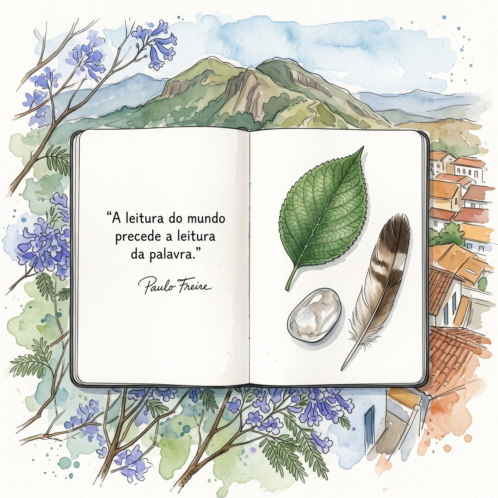
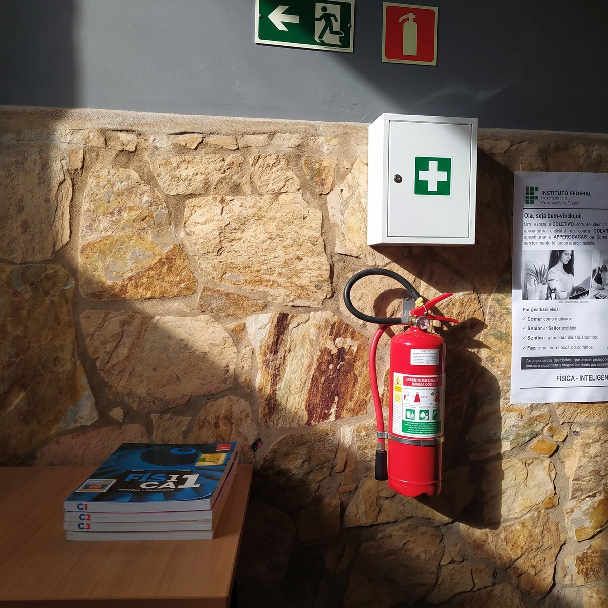
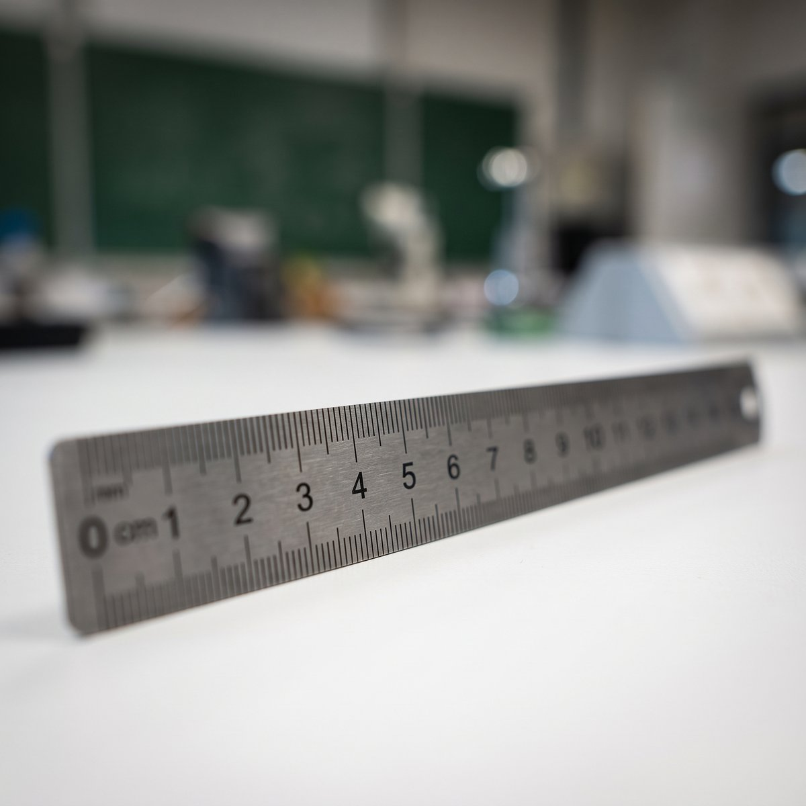
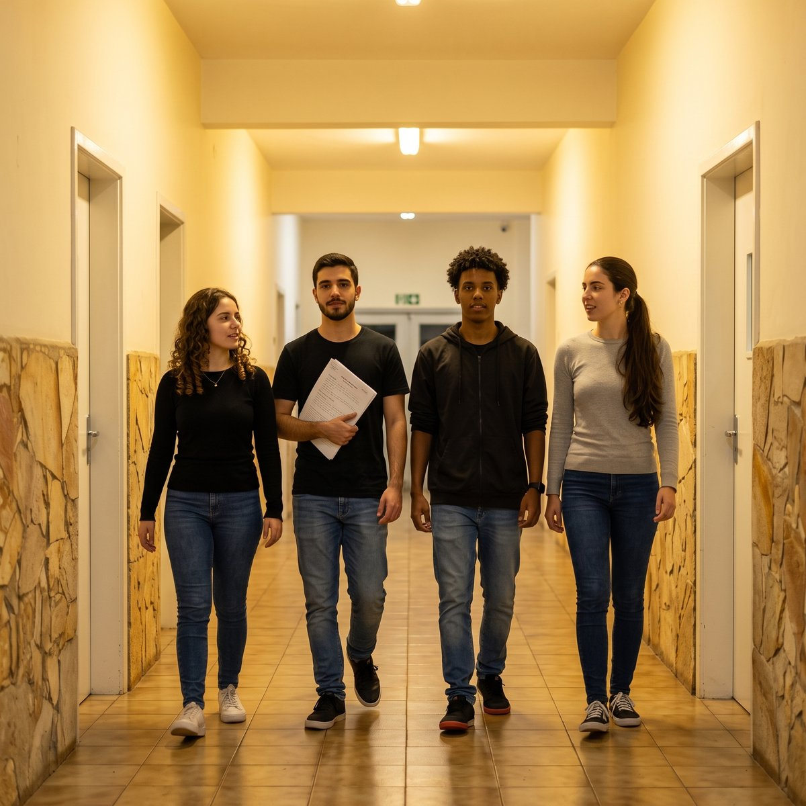
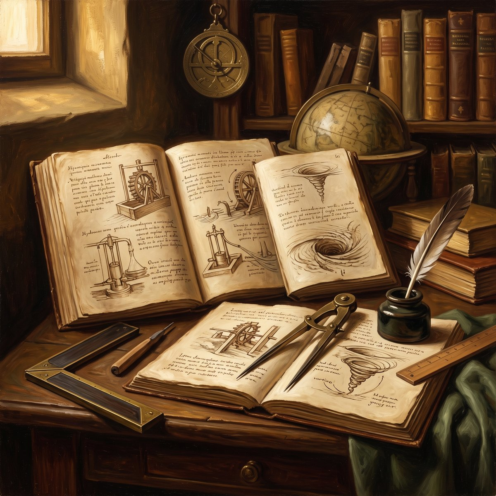

“A leitura do mundo precede a leitura da palavra.”

Em dois anos, alguém vai perguntar a você, na frente de uma turma, por que a régua marca 1,6 cm e não 2 cm. Você vai estar do outro lado da bancada. Esta disciplina começa hoje, deste lado.

A Introdução ao Laboratório (ILB) é a primeira disciplina experimental do curso de Licenciatura em Física, e é diferente de tudo o que você cursou até aqui. Nela, você não vai aprender um conceito novo de física — Mecânica I ainda está por vir, no período seguinte. Você vai aprender a medir, e a fazer isso com rigor suficiente para, um dia, ensinar a fazer o mesmo.
Essa é a dobra própria de uma licenciatura: aprender a medir e, ao mesmo tempo, aprender a ensinar a medir. As dez trilhas que vêm depois desta — cada uma com um experimento diferente de Mecânica — vão repetir sempre o mesmo protocolo de medida, que a pergunta 2 detalha. Esta trilha de abertura não mede nada ainda — ela instala o vocabulário e o comportamento que as outras dez vão exigir prontos.
Este texto responde cinco perguntas. Não são cinco assuntos escolhidos por quem ensina: são as cinco perguntas que quem chega a uma disciplina nova traz na cabeça, na ordem em que elas aparecem.
- O que os documentos oficiais revelam?
- O que são as Trilhas de Aprendizagem, quantas paradas estratégicas e quantos Objetos de Aprendizagem cada parada contém?
- Existe uma sequência para estudar que funciona bem, ou cada estudante escolhe por onde começar e como caminhar?
- Como funciona o sistema de avaliação?
- Como posso carregar os materiais e o método de estudo com segurança na minha mão?
Repare na forma antes do conteúdo: um plano de ensino apresentado pela dúvida de quem estuda, e não pela lista de quem ensina. Isso também é matéria de licenciatura — é uma decisão didática que você vai poder tomar, um dia, na sua própria turma.
IFMG — Campus Ouro Preto, Pavilhão de Física
O prédio retangular da capa deste texto é o Pavilhão de Física; ao lado dele, gêmeo, está o de Química. Os dois começaram a ser erguidos em 1982 e foram inaugurados em 1985 — fazem 41 anos em 2026. Os laboratórios de Física ficam no primeiro deles, e é ali que as doze trilhas desta disciplina vão acontecer.
Milhares de pessoas já atravessaram essas portas antes de você. E elas ligam este prédio a uma tradição que começou lá na Praça Tiradentes: em 1876, Claude-Henri Gorceix fundou a Escola de Minas e trouxe para Ouro Preto uma ciência que não aceitava afirmação sem medida. São 150 anos de medir antes de afirmar — e é exatamente isso que você vem aprender a fazer.
Passar pela porta foi o gancho. Agora vêm as cinco respostas, na ordem das perguntas. Nenhuma delas pede uma medição feita por você ainda: ao final, você terá o vocabulário e o comportamento que vai usar — e vai um dia ensinar — pelo resto do curso.
Toda disciplina existe primeiro no papel. Antes de olhar um instrumento, vale ler o que quatro documentos dizem sobre esta — porque é neles que estão as regras que ninguém pode mudar no meio do semestre. Os quatro estão no site da disciplina, na aba Documentos, em versão de tela e com PDF.
O Projeto Pedagógico do Curso (PPC). É o documento que descreve o que a Licenciatura em Física do IFMG-OP se compromete a formar: um professor de Física para a educação básica, e não um pesquisador de bancada. Toda decisão desta disciplina — inclusive a de você aprender a medir antes de estudar Mecânica — se justifica ali. Guia de leitura e PDF integral do PPC.
A matriz curricular. A ILB ocupa uma posição pouco comum: é um laboratório sem disciplina teórica vinculada, logo no 2.o período, antes de Mecânica I. Ela não tem pré-requisito — e é pré-requisito do Laboratório de Mecânica (6088), do 4.o período. Essa ordem é proposital. Quem já sabe reconhecer uma incerteza chega à Mecânica com uma pergunta a mais na cabeça; e o que se aprende aqui — medição, incerteza, tabela, gráfico e ajuste — é o que a disciplina do 4.o período vai supor pronto.
A ementa e o plano de ensino. São 30 horas em doze trilhas, ao longo de dezesseis encontros. A ementa nomeia, em vocabulário formal, as três competências que a disciplina se compromete a instalar — são as da pergunta 2 — e o plano de ensino as desdobra em datas, pesos e prazos.
O Regulamento de Ensino (Resolução n.o 01/2026 do IFMG). Vale para todas as disciplinas do curso, e fixa dois números que não se negociam: frequência mínima de 75% das horas do componente curricular e rendimento mínimo de 60% para aprovação.
Ler um documento oficial de formação é um gesto profissional, não burocrático. Na primeira semana de trabalho numa escola, alguém vai lhe entregar um Projeto Político-Pedagógico e esperar que você saiba extrair dele o que a sua disciplina deve fazer. Esta é a primeira vez que você faz isso — e é por isso que a leitura começa aqui, e não numa reunião daqui a três anos.
A disciplina não é dada em aulas soltas: é dada em trilhas. São doze — esta abertura, mais o Sistema Internacional de Unidades (SI) e as dez trilhas de bancada, cada uma com um experimento diferente de Mecânica Clássica.

As três paradas estratégicas. Cada trilha tem sempre as mesmas três, e elas não trocam de ordem:
- Pré-Lab — 20 minutos, em casa, antes do encontro. Você chega sabendo o que vai medir e o que espera obter.
- Lab — 100 minutos, na bancada. A medição acontece aqui, e só aqui.
- Pós-Lab — 40 minutos, em casa, depois do encontro. O tratamento dos dados: incertezas, tabelas, gráficos, ajuste.
Os Objetos de Aprendizagem (OAs) de cada parada. Um Objeto de Aprendizagem é uma peça de material com função única. A disciplina tem dezesseis, distribuídos pelas três paradas:
- Pré-Lab: o Ponto de Partida (PP), o Resumo em Áudio (MD), o Texto Temático (TT), as Simulações (SM) e o Testinho (TN). De apoio, fora do caminho numerado: os Cartões Didáticos (CD), o Mapa Conceitual (MC), o Inventário de Equipamento (IE) e o Checklist de Segurança (CS).
- Lab: o Roteiro de Bancada (RB), a Apresentação do Lab (AP), os Infográficos de Bancada (IG) e a Provinha (PR).
- Pós-Lab: o Relatório Mínimo (RM) e o Relatório Completo (RC). De apoio, o Desafio Pedagógico (DX), opcional.
Esta trilha é a exceção. A T0A não mede nada, e por isso entrega cinco dos dezesseis: no Pré-Lab, o Resumo em Áudio, este Texto Temático e os Cartões Didáticos; no Lab, o Roteiro de Bancada de reconhecimento — que aqui traz dentro dele o Inventário de Equipamento e o Checklist de Segurança — e a Apresentação do Lab. Sem dado coletado não há Pós-Lab. Os outros onze entram a partir da T01, e você encontra todos eles, na ordem, na aba Método do site da disciplina.
Por que não o formato tradicional. No laboratório de roteiro-receita, o estudante executa passos numerados e confere o resultado com um gabarito; se o número bate, a prática “deu certo”. Aqui não. O experimento é veículo: mede-se para aprender a avaliar incerteza, tabelar, graficar e ajustar. Muda o experimento dez vezes; não muda o protocolo de medida. Ao longo do semestre, a forma da tabela e o produto do tratamento crescem — de uma coluna repetida, na T01, até uma decisão sobre conservação de uma grandeza, na T10 —, mas a sequência das três etapas nunca muda.
Três paradas com produtos próprios é um desenho de aula que se transporta para uma escola sem laboratório nenhum: leitura antes, atividade no tempo de aula, registro depois. O equipamento é o que menos viaja; o desenho viaja inteiro.
O roteiro-receita que esta metodologia recusa não é invenção recente: é herança do laboratório demonstrativo do século XIX, o mesmo modelo das primeiras escolas técnicas desta região, em que o estudante assistia à experiência do professor e a copiava no caderno.
A resposta honesta é: a sequência é uma só, e é curta — mas o ritmo é seu. Você escolhe a hora e o lugar; não escolhe a ordem das paradas, porque cada uma prepara a seguinte.
Antes da aula (Pré-Lab, 20 min). Ouça o Resumo em Áudio (MD), leia este Texto Temático, preveja o resultado do que vai medir e confira duas listas: o Inventário de Equipamento (IE) e o Checklist de Segurança (CS). A previsão não precisa estar certa — ela precisa existir. Chegar sem previsão é chegar sem pergunta.

Durante a aula — segurança primeiro. Um laboratório de ensino de física tem riscos menores que uma planta industrial, mas não riscos nulos. Você vai localizar a saída de emergência e saber onde ficam o extintor de incêndio e o kit de primeiros socorros — os dois na sala de permanência dos professores, e não dentro do laboratório: é para lá que se corre, e é por isso que o caminho até ela se aprende hoje, e não no dia em que for preciso. Você vai conhecer também o Equipamento de Proteção Individual (EPI) exigido em bancada — calçado fechado, e óculos de proteção nas trilhas em que houver mola ou lançamento — e a norma de organização ao final de cada aula: cada instrumento devolvido ao seu lugar. Ao final deste bloco, a turma propõe e o professor consolida uma lista mínima de regras de uso. Você assina o termo de segurança no Roteiro de Bancada desta trilha: é pré-requisito para entrar na bancada na T01. Quem faltar hoje assina antes do encontro de 13/10, com a monitoria.

Durante a aula — o acervo. Todo instrumento tem um limite: a menor divisão, a menor distância que a sua escala consegue distinguir. Nesta trilha você percorre a bancada e conhece o acervo do Laboratório de Mecânica — réguas, trenas, paquímetros, cronômetros, dinamômetros e balanças, entre outros. Para cada um, duas perguntas bastam por enquanto: para que serve e qual é a sua menor divisão. Você não vai medir nada com eles hoje: vai vê-los, nomeá-los e anotar onde ficam.

Durante a aula — o registro. O Roteiro de Bancada (RB) é onde o dado bruto é registrado, datado, com as condições em que foi obtido. E há uma regra que vale para o semestre inteiro: o dado bruto não se apaga e não se corrige. Mudou de ideia? Anota-se ao lado, sem rasurar o que veio antes — porque o que parecia erro na bancada às vezes é o único registro de que alguma coisa mudou na sala. Esta é a única competência do Tema 0 que se pratica sem medir nada.
Depois da aula (Pós-Lab, 40 min). Dois relatórios, com prazos diferentes: o Relatório Mínimo (RM), de uma página, em até 1 dia; e o Relatório Completo (RC), em até 6 dias. Nesta trilha de abertura não há nenhum dos dois — sem dado coletado, não há o que relatar. O primeiro relatório é o da T01.
Que norma de segurança cabe numa escola que não tem laboratório dedicado? E que montagem deste acervo se improvisa numa sala comum? Uma régua escolar, um cronômetro de celular e um pouco de método já bastam para uma primeira aula de medição — o que se perde em precisão, ganha-se em ineditismo, se a turma nunca tiver visto isso antes.
Antes do Sistema Internacional de Unidades, o ouro extraído nesta região era pesado em oitavas e quilates, com instrumentos de precisão muito diferente dos que estão na bancada hoje; parte desse acervo histórico está no Museu de Ciência e Técnica da Escola de Minas, na Praça Tiradentes.
A mesma exigência atravessa os dois séculos: menor divisão, resolução e rastreabilidade são vocabulário da Metrologia, a área da ciência que trata das medidas comerciais, industriais e científicas. Um instrumento sem manutenção perde a rastreabilidade da sua medida — por isso a segurança do acervo é também segurança metrológica, e não apenas física.
A avaliação desta disciplina é processual: ela acompanha as três paradas, e os pesos espelham a estrutura da trilha. Quem mede bem na bancada e quem relata bem pesam igual.
Os quatro instrumentos e seus pesos (válidos das trilhas T01 a T10):
- Pré-Lab — 20%. Os Objetos de Aprendizagem da preparação pesam 20% da sua nota. A ficha de preparação do Texto Temático é entregue no início do encontro, e avalia preparo, não acerto da previsão.
- Lab — 40%. O Roteiro de Bancada preenchido, com a tabela de dados brutos e o registro do procedimento. Conduta de segurança, qualidade da montagem, registro completo e legível, reprodutibilidade.
- Pós-Lab: Relatório Mínimo (RM) — 15%. Uma página, digital, em até 1 dia após a prática. Cobra o dado bruto completo, o cálculo visível e o resultado expresso como ( valor ± incerteza ) unidade.
- Pós-Lab: Relatório Completo (RC) — 25%. Digital, em até 6 dias. Tratamento de incertezas, tabelas e gráficos, linearização, ajuste de curva e análise crítica do resultado.
Esta trilha é a exceção. A T0A não vale nota de conteúdo. Cobra-se presença e o termo de segurança assinado — que é o pré-requisito para entrar na bancada na T01.
Aprovação. Frequência mínima de 75% e rendimento mínimo de 60%, pelo Regulamento de Ensino.
A estratégia de estudo que decorre disso. Repare onde está o peso: 60% da nota se decide antes de você sair do laboratório, entre a preparação e a bancada. Quem chega preparado mede melhor; quem registra bem escreve o Relatório Mínimo no mesmo dia, enquanto o dado ainda está quente — e é exatamente para isso que o RM existe, para impedir o dado de esfriar. Feito isso, o Relatório Completo dos 25% vira revisão, e não reconstrução de uma noite que você já não lembra direito.
Pesos que premiam o processo, e não uma prova final, são uma decisão didática, não uma formalidade administrativa. É uma decisão que você vai ter de tomar na sua própria turma — e vale reparar, agora, no efeito que ela produz sobre o seu comportamento de estudante.
O critério de nota do Relatório Mínimo é, literalmente, o critério metrológico: resultado como ( valor ± incerteza ) unidade, com algarismos significativos coerentes com a menor divisão do instrumento. Não se avalia aqui a beleza do texto; avalia-se se a medida foi expressa como a Metrologia exige que ela seja.
Nenhum material desta disciplina depende de você estar no campus, e nenhum depende de papel. Tudo o que você precisa cabe no telefone — e essa foi uma decisão de projeto, não uma conveniência.
O site da disciplina. É a porta de entrada: distribuição dos materiais de todas as trilhas, entrega dos relatórios e canal da monitoria. Abre no celular, e o endereço está no código QR da primeira página deste texto impresso.
O Resumo em Áudio (MD). De três a cinco minutos, um por trilha. O resumo curto monta o esqueleto do assunto e abre o caminho para o Texto Temático — e cabe no trajeto até o campus.
Os Cartões Didáticos (CD). Revisão ativa do vocabulário da disciplina e dos instrumentos do acervo: você responde antes de virar o cartão. Cinco minutos de fila valem uma revisão.
Este Texto Temático, em duas formas. O PDF, para imprimir e anotar à mão; e a versão de tela, para o telefone. As duas têm sempre a mesma versão — se uma mudar, a outra muda junto.
O ajuste de curva assistido por inteligência artificial. A partir da T01, você pode usar uma ferramenta de inteligência artificial para ajustar a curva aos seus dados. Com duas condições, que não são negociáveis: o resultado é sempre conferido por você — coerência dimensional, ordem de grandeza, resíduos — e o uso é declarado no relatório, com a indicação do que foi conferido. Uma resposta que chega pronta é uma hipótese, não um resultado.
A monitoria. O atendimento é digital — tratamento de dados, construção de gráficos e redação de relatório. Dúvidas presenciais também podem ser agendadas pelo site da disciplina.
Áudio, cartões e site são recursos que você pode reproduzir numa escola pública sem laboratório: o método viaja mesmo quando o equipamento não viaja. Olhe para estes materiais também como quem vai fabricá-los um dia, e não apenas como quem os consome agora.
A conferência exigida sobre o ajuste da inteligência artificial é o mesmo crivo que a Metrologia aplica a qualquer resultado: uma medida sem verificação não é uma medida, é uma afirmação. Delegar o cálculo é permitido; delegar o julgamento, não.

Você sai deste primeiro encontro com três coisas: o termo de segurança assinado, o Roteiro de Bancada com a primeira entrada feita e a lista dos instrumentos do acervo, cada um com a sua menor divisão anotada ao lado. Nenhuma delas é uma medida — e é justamente por isso que, quando a primeira medição chegar, na T01, você vai chegar a ela sabendo o que fazer com o número que sair da régua.
E você sai também com as cinco respostas: o que os documentos obrigam, como a disciplina é feita, como se estuda nela, como ela avalia e como ela cabe na sua mão. Se em algum momento do semestre você não souber o que fazer em seguida, é provável que a resposta esteja em uma dessas cinco — volte a este texto antes de perguntar.
Num caderno de bolso, entre desenhos de máquinas e estudos de água corrente, Leonardo escreveu que a sabedoria é filha da experiência — la sapienza è figliola della sperienzia. A frase não estava num tratado nem numa aula: estava num caderno de trabalho, escrito enquanto a mão ainda media. Leonardo não separava o gesto de olhar do gesto de registrar, e os seus cadernos são, ao mesmo tempo, obra de arte e caderno de bancada — exatamente o que se pede de você a partir de hoje.
Vale reparar no que a frase inverte. Para Leonardo, a sabedoria não vem antes da experiência para depois ser aplicada a ela: nasce dela, como filha. Numa disciplina em que você aprende a medir antes de estudar Mecânica, essa ordem deixa de ser poesia e vira desenho curricular — é a razão pela qual a ILB está no 2.o período, e não no 5.o.
E há um limite que também é conteúdo de formação. Nem tudo o que um professor faz numa sala cabe em número: o interesse que desperta, a dúvida que acolhe, a confiança que constrói. Quem vai ensinar física precisa saber a diferença entre exigir rigor onde ele é possível e exigir número onde ele não diz nada. A experiência de que Leonardo fala é maior do que a medição — e a medição é a parte dela que esta disciplina consegue ensinar.

“A sabedoria é filha da experiência.”
Paulo Freire viu que se lê o mundo antes de ler a palavra; Galileu disse que esse mundo está escrito em língua matemática e ensinou a soletrá-la; Leonardo chamou a sabedoria de filha da experiência, e escreveu isso num caderno, enquanto media. Três cérebros, o mesmo gesto.
CAMPOS, A. A.; ALVES, E. S.; SPEZIALI, N. L. Física experimental básica na universidade. 2. ed. Belo Horizonte: Editora UFMG, 2008.
PIACENTINI, J. J. et al. Introdução ao laboratório de física. 2. ed. Florianópolis: Editora da UFSC, 2018.
SANTORO, A. et al. Estimativas e erros em experimentos de física. 2. ed. Rio de Janeiro: EdUERJ, 2013.
HEWITT, P. G. Física conceitual. 12. ed. Porto Alegre: Bookman, 2015.
FEYNMAN, R. P.; LEIGHTON, R. B.; SANDS, M. L. Feynman: lições de física. Porto Alegre: Bookman, 2008. v. 1, 2 e 3.
HALLIDAY, D.; RESNICK, R.; WALKER, J. Fundamentos de física: mecânica. 10. ed. Rio de Janeiro: LTC, 2016. v. 1.
FREIRE, Paulo. A importância do ato de ler. São Paulo: Cortez, 1982.
GALILEI, Galileo. Il Saggiatore. Roma, 1623. (usada no Roteiro de Bancada desta trilha)
LEONARDO DA VINCI. Codice Forster III, c. 1493–1496. Londres: Victoria and Albert Museum.
Estas Trilhas de Aprendizagem são concebidas, dirigidas e revisadas por uma equipe humana — autor, colaborador, monitores e a equipe do Núcleo de Inovação e Desenvolvimento de Experimentos Científicos (NIDEC) e da Coordenadoria da Área de Física (CODAFIS).
A inteligência artificial entra no processo como ferramenta, nunca como autora: é usada sob curadoria humana, com princípios claros, diretrizes pedagógicas explícitas e honestidade intelectual.
Assim, declaramos abertamente o uso de IA como assistente de redação e diagramação de todos os Objetos de Aprendizagem (Claude Opus 5 e Claude Cowork, Anthropic, 2026; Gemini Notebook, Google, 2026), do mesmo modo que se declara o uso de qualquer ferramenta de autoria.